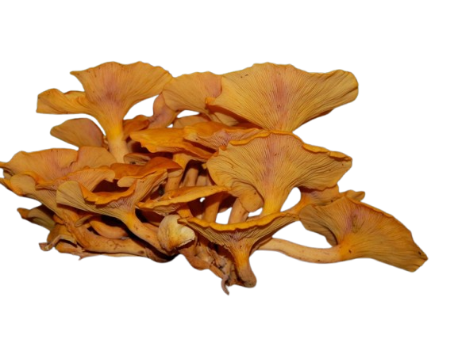
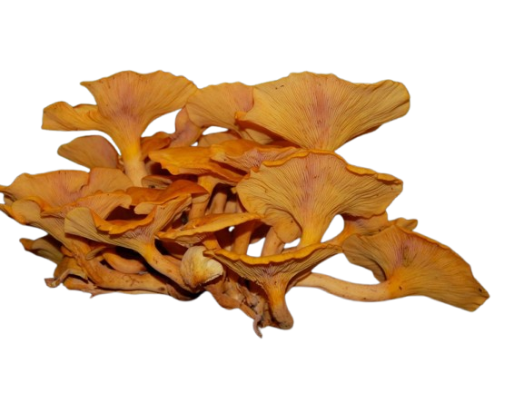

Descripción morfológica
Pleurotus ostreatus, conocido como "seta ostra", "gírgola" o "orejón", es un hongo basidiomiceto de la familia Pleurotaceae. Sus cuerpos fructíferos presentan sombreros en forma de concha (5-25 cm de diámetro) con superficie lisa y color variable (grisáceo, pardo azulado o blanco según la variedad). El margen es enrollado en ejemplares jóvenes y ondulado en adultos. Las láminas son decurrentes, blancas a crema, muy apretadas. Carece de anillo y el pie, cuando presente, es excéntrico o lateral, corto y fibroso.
Características distintivas
- Crecimiento: Forma grupos imbricados ("en teja") sobre madera.
- Esporas: Cilíndricas, lisas, de 8-12 × 3-4 µm, color lila pálido en masa.
- Olor/sabor: Aroma anisado suave y sabor dulce con notas a avellana.
- Variedades: Incluye cepas rosadas (var. salmoneo) y amarillas (var. citrinopileatus).
Distribución y hábitat
Especie cosmopolita que crece de forma silvestre en bosques templados y subtropicales de Europa, Asia y América. Coloniza troncos y tocones de árboles caducifolios (especialmente hayas, robles y álamos), causando pudrición blanca. En cultivo, se adapta a diversos sustratos lignocelulósicos (paja, serrín, bagazo de caña). Fructifica naturalmente en otoño e invierno, tolerando temperaturas bajas (hasta 5°C), lo que le valió el nombre "ostreatus" (similar a una ostra por su forma y resistencia al frío).
Condiciones ecológicas
- Sustrato: Madera muerta o debilitada, preferentemente de angiospermas.
- Humedad: Requiere 85-95% de humedad relativa para fructificar.
- Luz: Necesita 100-500 lux durante la formación de primordios.
Ciclo de vida y bioquímica
Hongo lignolítico que degrada eficientemente la lignina mediante enzimas extracelulares (lacasas, peroxidasas). El micelio blanco produce primordios en respuesta a bajadas de temperatura (termoinducción). Las esporas se dispersan por el viento y germinan en 24-48 horas. Presenta un sistema de apareamiento tetrapolar (dos loci genéticos controlan la compatibilidad sexual), lo que aumenta su diversidad genética. Su genoma (35 Mb) contiene 12,000 genes, incluyendo celulasas y hemicelulasas de interés industrial.
Etapas de cultivo
- Preparación sustrato: Pasteurización de paja/serrín (70°C durante 4 horas).
- Inoculación: Siembra con grano miceliado (5-7% del peso del sustrato).
- Inducción: Exposición a 10-15°C y luz difusa para estimular fructificación.
Importancia económica y ecológica
- üå± Biorremediaci√≥n: Degrada hidrocarburos y pesticidas en suelos contaminados.
- üçÑ Producci√≥n: 3er hongo más cultivado mundialmente (1.5 millones de toneladas/a√±o).
- üíä Medicina: Fuente de lovastatina (reduce colesterol) y Œ≤-glucanos (inmunoestimulantes).
- ♻️ Sostenibilidad: Convierte residuos agrícolas en proteína comestible (eficiencia del 70-80%).
Datos históricos y curiosidades
- Historia: Consumido desde la antigua Grecia; primer cultivo documentado en Alemania (1917).
- Nombre común: "Seta ostra" alude a su forma y hábito de crecimiento en capas.
- Depredación: Produce toxinas paralizantes para nematodos, que digiere como fuente de nitrógeno.
- Biotecnología: Sus enzimas se usan en producción de biocombustibles y papel ecológico.
Propiedades nutricionales
| Nutriente | Cantidad (por 100 g) |
|---|---|
| Proteínas | 3.3 g |
| Fibra | 2.3 g |
| Vitamina D₂ | 0.2 µg (tras exposición UV) |
Diferencias con especies similares
- Pleurotus pulmonarius: Sombrero más pálido y crecimiento estival.
- Pleurotus eryngii: Pie central carnoso y asociado a raíces de umbelíferas.
- Lentinula edodes: Superficie del sombrero con escamas pronunciadas.